This section provides a simple introduction with examples, for creating, building and launching an MPI program.
Two different creation scenarios are covered:
This is an example of a parallel program to be built and run on a remote machine. Source files are edited on the local (Eclipse) machine and then it can be built and run on a remote target machine.
This is an example of a small MPI program to create and edit on the local machine - as an introduction to using Eclipse to develop C and MPI source codes.
This describes creating a synchronized project with an explicitly provided Makefile - a "Makefile" project. Actually this doesn't require a makefile - it means that the user provides a build command, and the default build command is "make". This can be easily changed for other build mechanisms.
It will cover the following steps:
We assume for this example that the source code exists on the remote target machine.
$> pwd
/u/userid/shallow
$> ls
calc.c copy.c decs.h diag.c dump.c init.c main.c Makefile time.c tstep.c tstep.f90 worker.c
In the Project Explorer view, right click, then choose New > Synchronized C/C++ Project if your project is C/C++ only.
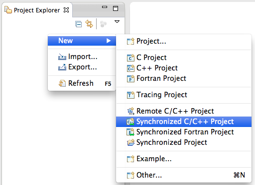
In the New Synchronized Project wizard, enter the project name, e.g. "shallow"
The Local Directory specifies where the local files are located. The default value is a directory under your Eclipse workspace directory, so leave this as is.
The Remote Directory specifies where the remote files are located, so we must tell Eclipse where it is.
Here we create a new connection to the remote machine. Then select the New... button next to Connection: to create a new connection.
Note: if your dialog also asks for Remote Services Provider, then the default remote services provider is not set in Preferences under Remote Development.
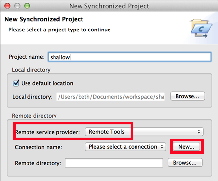
The New Connection dialog appears. Enter a name for the connection in Connection name: and enter the host name, user name, and password.
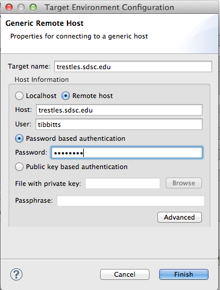
If your machine access requires ssh access through a frontend/intermediate node, use localhost and port - see SSH tunneling
Select Finish when the connection information is filled in.
Back on the wizard dialog, once the connection has been created, choose the remote location of the source files of your project - for Remote Directory, select the Browse button. Note that this is the first time the connection information is used, so if you have specified hostname, userid, or password incorrectly it will fail. If you do get an error connecting, and you need to change the host name, userid or password in the connection, you can:
If the connection information is successful, the Browse button will pop up a dialog on the remote system allowing you to select the Project Location on that system. Select the location of your source files - or create a new directory to which you can add files later - and select OK.
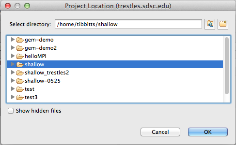
Back in the new project wizard, choose the project type and toolchain(s). If you are synchronizing with an existing directory of source code and have your own makefile (or other build command), choose a Project type of Makefile Project > Empty Project. For Remote Toolchain, choose the toolchain that most closely matches the remote system.
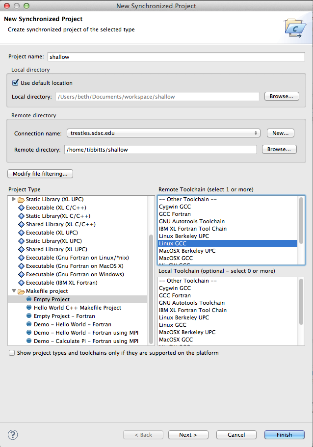
If you want to control which files get synchronized back to the local machine, for example, to not sync binary files that are built on the remote machine, choose File Filtering. By default all files are synchronized between the local and remote systems (including binaries).
Select Finish to complete the sync project setup.
For more details on synchronization, configurations, filters, Synchronization properties, etc. see Synchronized Projects.
Since this example describes how to create a synchronized project mirrored on a remote machine, it assumes a directory on the remote machine exists with source code and a Makefile already existing in it. While using the remote terminal within Eclipse is not necessary to create the project, this is a good point to demonstrate doing so and show what files exist on the remote machine for this example.
See Remote Terminal for how to connect with shell access to the remote system, within an Eclipse view, using the same information already available in the connection you created for the synchronized project.
This example shows the files in the remote directory that are mirrored in the synchronized
project within Eclipse PTP.
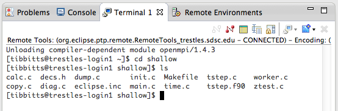
To edit a source file, double-click on a file in the Project explorer view. The editor opens on that file. You may see Codan errors on lines that use APIs from include files that aren't on your system, and in the Eclipse Problems view.
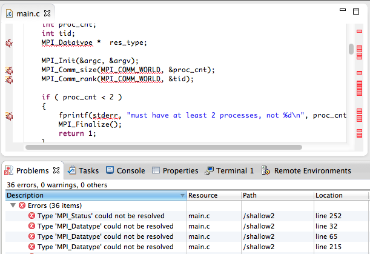
To remove the Codan errors, you can either
With include files successfully specified (or Codan errors turned off), the editor errors should go away:
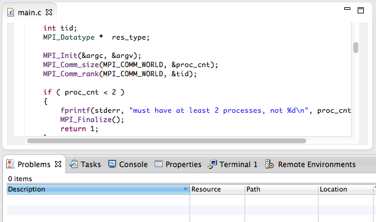
Assuming that you have MPI installed on the remote system and accessible via PATH, etc, it can now be built.
A build can be initiated by using the Project > Build Project menu
or selecting the project in
the Project Explorer view and selecting the
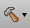
hammer icon in the toolbar.
If the hammer icon or other build options are not available, it probably means
there is no project selected in the Project Explorer view.
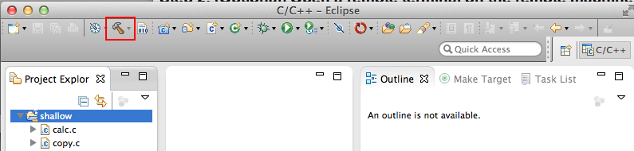
The files are synchronized prior to the build to assure the current versions are used, and after the build to synchronize the results of the build back to the local project. (If you do not want binaries from the remote system synchronized back to the local project, see File Filters.) You can see the results of the build in the console view. (Click on the Console tab near the bottom of the Eclipse workbench.)

Once the build is complete, any errors (e.g. compile errors) will be displayed in the Problems view, the corresponding source files will be flagged, and markers will be inserted into the editor window.
To force a sync of the files between the local and remote copies at any time, select the project in the Project Explorer view and use the Sync button in the toolbar.
Once you have verified that the application has built correctly, you can then create a run configuration and launch the parallel program.
This describes creating a local MPI project without an explicitly provided Makefile - a "Managed Build" project with "Hello MPI World" sample source code.
It will cover the following steps:
Note: this tutorial uses the Parallel Language Development Tools (PLDT) wizards for quickly creating MPI projects with sample code.
If not already there, switch to the C/C++ Perspective using Window > Open Perspective > Other... and then choose C/C++
Create a new MPI project using the managed build facility. Select File > New > C Project ... and the New Project dialog should open.
Enter a name for the project e.g. MyMPIProject.
From the Project types list, expand Executable and select MPI Hello World C Project
Make sure the toolchain selected is valid for your machine.
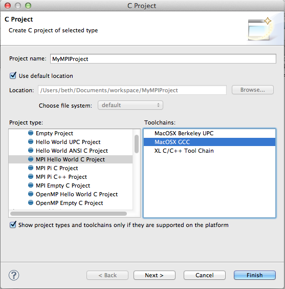
Click the Next> button to advance to the next page of the new project wizard.
In the Basic Settings dialog, fill in the author name and change any other values you like. The 'Source' value indicates the name of the folder in which the source file will be created.

Click Next >.
In the MPI Project Settings dialog, make sure Add MPI Project settings to this project is checked. You can uncheck Use default information if you need to change any values for include paths, libraries or search path, or MPI build commands.
For more information see Include Paths and MPI Preferences.

Click Finish.
The new project is created and appears in the Project Explorer view. Expand the src folder to see the new source file.
Assuming that you have MPI installed and that the project was configured correctly, the application should now automatically build. When the automatic build setting is selected, Eclipse will build the application whenever you save changes in an editor. Automatic/manual build can be toggled by selecting Project > Build Automatically....
A build can be initiated manually using Project > Build Project or selecting the project in the Project Explorer view and selecting the hammer icon in the toolbar.
Once the build is complete, any errors will be displayed in the Problems view, the corresponding source files will be flagged, and markers will be inserted into the editor window.
Double-click on the source file name to open the C/C++ editor in order to correct any errors.

Details of the commands that were executed to complete the build can be seen in the Console view (click on the Console tab near the bottom right hand corner of the Eclipse workbench.)
To change the MPI command, in the project properties, select C/C++ Build > Settings and on the GCC C Compiler tree item, change the Command: string from mpicc to whatever your MPI build command may be.
Once you have verified that the application has built correctly, you can then create a configuration and launch the parallel program.